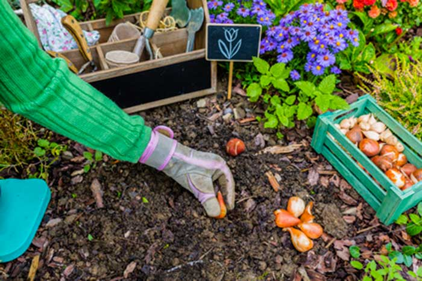

Historia de “Tulipanes”
En el año 1995, en un pequeño pueblo de la Patagonia, nació “Tulipanes”, una florería y vivero
fundada por Ana y Carlos, una pareja apasionada por la naturaleza y las flores. Inspirados por los
vastos campos
de tulipanes que habían visto durante un viaje a Holanda y que, junto a la ayuda de otros
apasionados de la jardineria, decidieron trabajar duro para poder traer esa belleza a su tierra
natal, Cipolletti.
En sus inicios comenzaron con un pequeño invernadero en su jardín,
en el cual cultivaron tulipanes, lirios, girasoles y otras flores locales. Con el tiempo,
su dedicación y amor por la horticultura dieron frutos y atrajeron a una gran comunidad de amantes
de las plantas, lo que genero la idea de crear este pequeño emprendimiento e inmediata ejecucion de
la misma. Desde ese momento “Tulipanes” se convirtió en un punto de referencia para los amantes de
las plantas y las flores.
Trayectoria
A lo largo de los años, “Tulipanes” creció y se expandió. Ana y Carlos invirtieron en
tecnología sostenible para sus invernaderos, utilizando sistemas de riego por goteo y
energía solar para reducir su impacto ambiental. Además, comenzaron a ofrecer talleres de
jardinería y cuidado de plantas, educando a la comunidad sobre prácticas sostenibles, las
ventajas de utilizar plantas curativas en la vida cotideana, como fertilizar nuestros
jardines y como curar a nuestras plantas cuando estas se enferman.
En 2010, “Tulipanes” abrió su primera tienda en la ciudad, ofreciendo una amplia variedad de
flores, plantas y productos de jardinería. La tienda se convirtió rápidamente en un éxito, y
la empresa continuó expandiéndose, abriendo sucursales en varias ciudades de la región.
Misión
La misión de “Tulipanes” es proporcionar flores y plantas de alta calidad, cultivadas de
manera sostenible, para embellecer los hogares y jardines de sus clientes. La empresa se
compromete a promover prácticas de jardinería ecológicas y a educar a la comunidad sobre la
importancia de cuidar el medio ambiente.
Visión
La visión de “Tulipanes” es convertirse en líder en la industria de la horticultura
sostenible en Argentina, inspirando a otras empresas a adoptar prácticas amigables con el
medio ambiente. La empresa aspira a expandirse a nivel nacional e internacional, llevando la
belleza de sus flores y plantas a más personas y promoviendo un futuro más verde.
Valores
Sostenibilidad: “Tulipanes” se dedica a minimizar su impacto ambiental mediante el uso de
tecnologías verdes y prácticas de cultivo sostenibles.
Calidad: La empresa se compromete a ofrecer productos de la más alta calidad, garantizando
la satisfacción de sus clientes.
Educación: “Tulipanes” valora la educación y se esfuerza por enseñar a la comunidad sobre la
importancia de la jardinería sostenible.
Innovación: La empresa busca constantemente nuevas formas de mejorar sus prácticas y
productos, manteniéndose a la vanguardia de la industria.
Compromiso con la comunidad: “Tulipanes” se dedica a apoyar y enriquecer a la comunidad
local, participando en proyectos y eventos comunitarios.